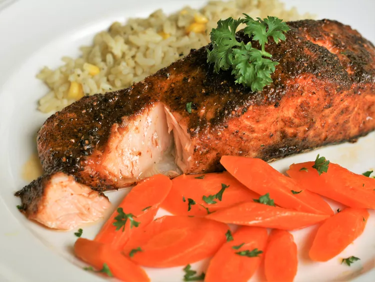

Cajun Air-Fryer Salmon

Description
This Cajun Air-Fryer salmon is simple to make but packs a punch. The Cajun
seasoning, featuring a mix of paprika, garlic powder, onion powder, cayenne
pepper, and thyme, imparts a smoky, earthy, and slightly sweet taste to
the salmon. The Air-Fryer method also creates a crispy crust on the outside,
adding a pleasing crunch to the dish. The tender and flaky texture of the
salmon, along with its bold and spicy flavor, makes it a perfect pairing
with a side of roasted vegetables or a fresh salad. This dish is sure to
satisfy your taste buds with its delicious blend of Cajun flavors.
Ingredients
- Cooking oil spray
- 1 tablespoon Cajun seasoning
- 1 teaspoon brown sugar
- 2 (6 ounce) skin-on salmon fillets
Steps
-
Preheat the air fryer to 390 degrees F (200 degrees C). Grease the air
fryer basket with cooking oil spray.
-
Mix together Cajun seasoning and brown sugar in a small bowl until
combined; spread onto a plate.
-
Rinse and dry salmon fillets with a paper towel. Mist fillets with
cooking spray. Press fillets, flesh-side down, into seasoning mixture.
Place coated fillets, skin-side down, into the prepared air fryer
basket. Mist fillets again with cooking spray.
-
Close the lid and cook in the preheated air fryer for 8 minutes. Remove
from the air fryer and let rest for 2 minutes before serving.
Pro tips
-
Use olive oil for best results. Olive oil has a high smoke point.
-
Use a thermometer to check the internal temperature of the salmon.
The internal temperature should be ~145 degrees F (~63 degrees C).
Return to home page